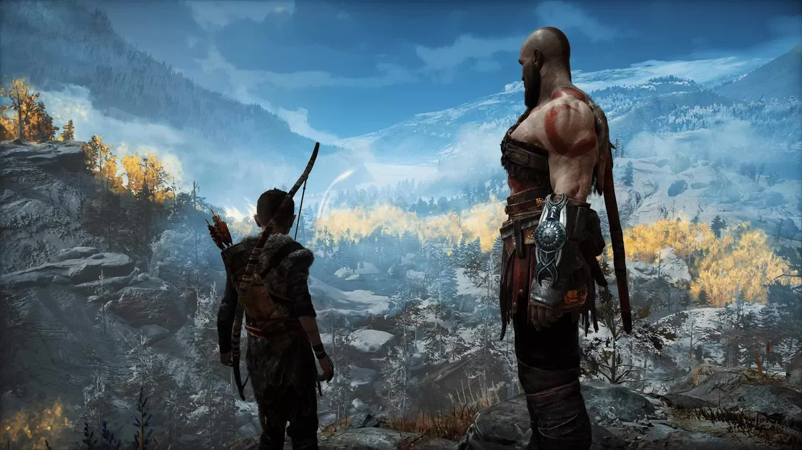

Combate
Kratos usa o Machado Leviatã, escudo e outras habilidades. É possível combinar golpes, bloquear e se esquivar.
Ação · Aventura · Campanha
Acompanhe Kratos e Atreus numa jornada cheia de desafios e mitologia nórdica.
Sem grandes spoilers
No God of War de 2018, Kratos vive longe de seu passado na Grécia. Ele parte com seu filho Atreus para cumprir um pedido importante da família.
Durante a viagem pelos reinos da mitologia nórdica, os dois enfrentam obstáculos, descobrem lugares novos e aprendem a se entender melhor. A relação entre pai e filho é uma das partes mais marcantes do jogo.
Kratos usa o Machado Leviatã, escudo e outras habilidades. É possível combinar golpes, bloquear e se esquivar.
O arco e as habilidades de Atreus ajudam em combates e alguns quebra-cabeças.
Armaduras, melhorias e habilidades mudam seus atributos e a forma de enfrentar os desafios.
Baús, caminhos opcionais e enigmas recompensam quem observa bem os ambientes.